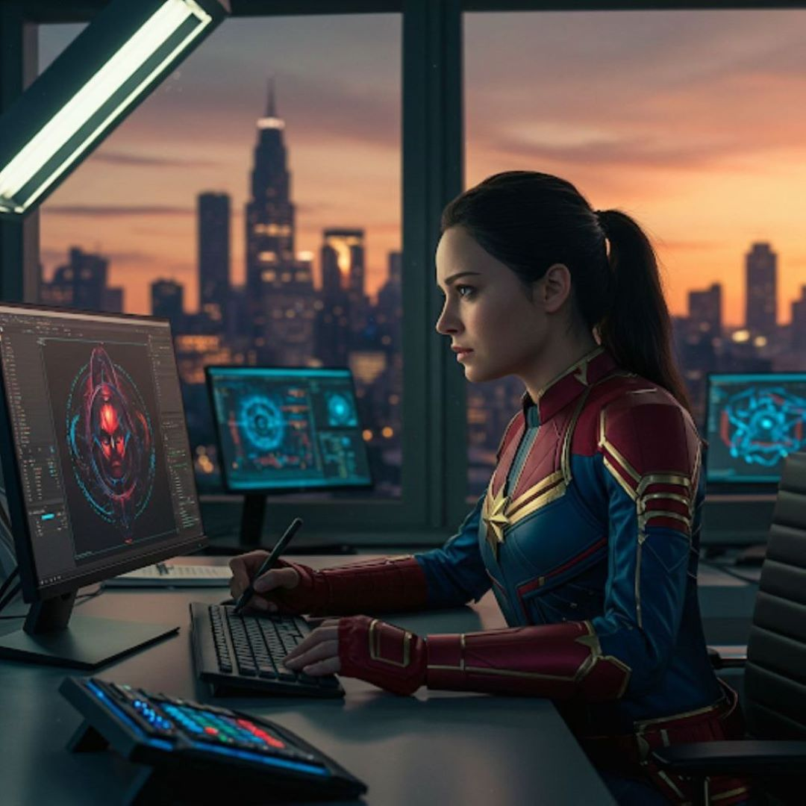

CAPITÃ MARVEL
Apresentada na HQ: Marvel Super Heroes #13 (1968) Filme/Série: Capitã Marvel (2019) e Vingadores: Ultimato (2019) Carol Danvers, após um incidente com uma tecnologia alienígena kree, teve sua estrutura genética alterada, o que a transformou em uma híbrida entre humano e kree. Isso lhe concedeu poderes cósmicos que utilizou para se tornar a super-heroína, Ms. Marvel. Apenas anos mais tarde é que ela assumiria o nome de Capitã Marvel. Poder é o que não falta nela. Suas habilidades cósmicas são apresentadas das mais diversas formas. Aqui estão alguns de seus poderes: Super-força, super-resistência, fator de cura, voo, super-velocidade, projeção e absorção de energia. Tudo isso faz com ela possua um QI alto e com uma inteligente suficiente pra poder construir naves e eqipamentos indestrutivéis usando a energia atômica.